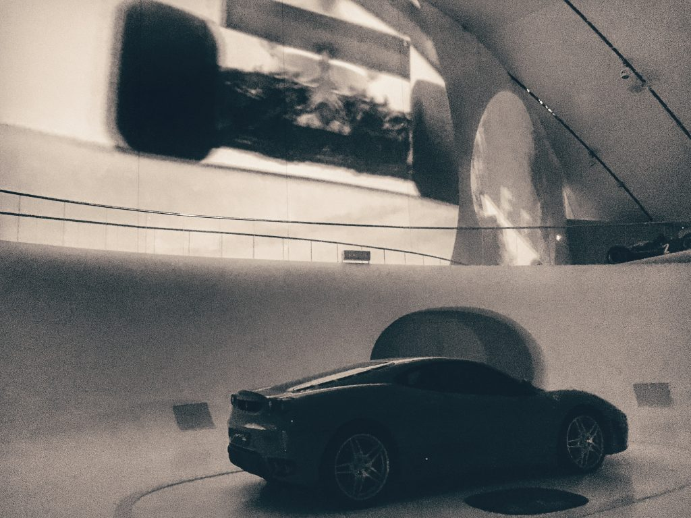

Photo by: Francesca Tosolini
In Italy, speed limits are:- 130 km/h (80 mph) on the freeway; but 110 km/h (68 mph) with bad weather
- 90 km/h (55 mph) on suburban roads
- 50 km/h (31 mph) in the cities.

Photo by: Francesca Tosolini
In Italy, speed limits are: